Introduction
This documentation is last updated on 19th December 2016.
Thank you for purchasing Real Places WordPress Theme. If you have any question that is beyond the scope of this documentation, Feel free to as a question at our support site.
Disclaimer:
We offer limited support for our themes. We only provide support for theme's core features. We cannot guarantee that this theme will work properly with all third-party plugins and server environments. If you plan on adding numerous plugins to this theme then please note, We cannot facilitate support for any conflicts that might arise with this theme's default functionality. The Real Places WordPress theme is presented as it is.
Themeforest Item Purchase Code to Signup on Support Site
Kindly visit this knowledge base article to learn about how to get item purchase code from themeforest to sign-up on our support site.
Updating WordPress Theme
If this is a theme update and you want to apply it on your existing installation then please visit this knowledge base article to learn about a better way to update your theme
If you like this theme, Kindly support us by rating this theme with 5 stars (How to rate?)
{kind=link}
Install Theme
In start, You must have a working version of WordPress already installed. For information in regard to installing the WordPress CMS, please see the WordPress Codex Installing WordPress especially the Requirements.
Once you have a working version of WordPress, you need to download All files and documentation from themeforest and extract the downloaded zip to get various files including inspiry-real-places.zip.
{kind=link}
Step 1: Install Theme Via WordPress Dashboard
- Go to 'Appearance > Themes' section
- Click 'Add New' and select the 'Upload Theme' option
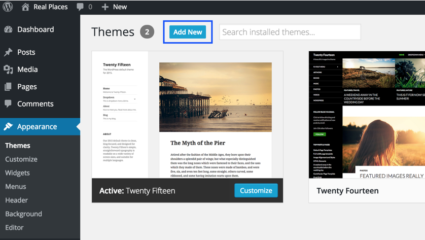
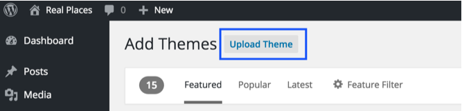 - Choose the inspiry-real-places.zip file and press 'Install Now'
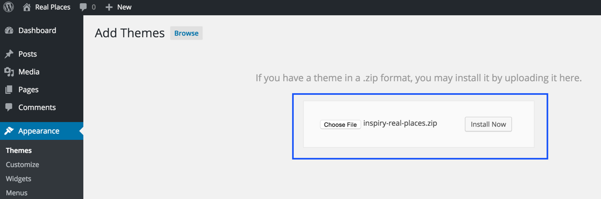 - Once the theme is uploaded you need to go back to themes page without activating it as it is recommended to use the child theme and now we will upload it.
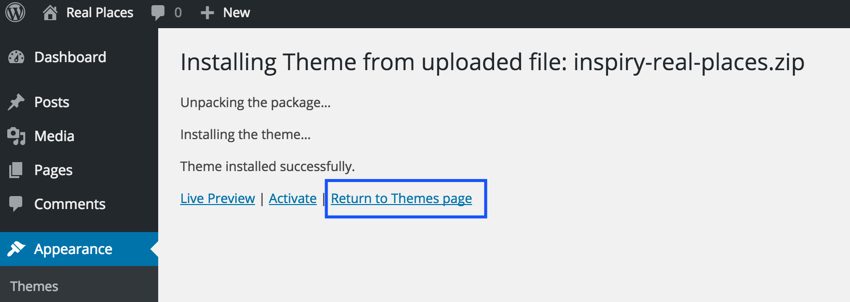 - Follow step 2 again and Choose the inspiry-real-places-child.zip file and press 'Install Now'
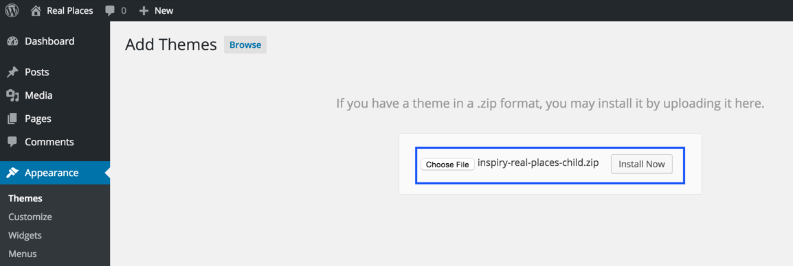 - Once the child theme is uploaded you can activate it.
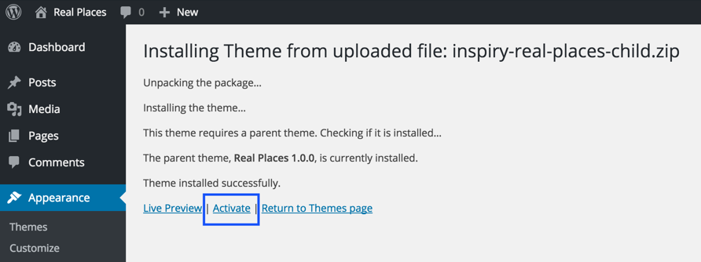 - Activating the theme will take you to the themes page.
if you face any problem during upload through dashboard, please upload the theme using FTP as guided below.
Step 1 (Alternative): Install Theme Via FTP
- Access your hosting server using an FTP client like FileZilla
- Go to the 'wp-content/themes' folder of your WordPress installation
- Extract the inspiry-real-places.zip file and put the inspiry-real-places folder in 'wp-content/themes/' folder
- After that extract the inspiry-real-places-child.zip file and put the inspiry-real-places-child folder in 'wp-content/themes/' folder
- Go to 'WordPress Dashboard > Appearance > Themes' section to activate the Real Places child theme
- Activating the theme will take you to the themes page.
Step 2: Install Required Plugins
- After you have installed and activated the Real Places child theme. Go to Appearance > Themes there'll be a message of required & recommended plugins at the top of the WordPress dashboard. 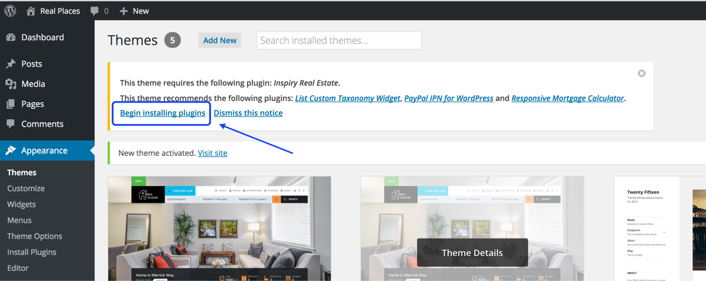
-
Click on Begin Installing Plugins and it will take you to Appearance > Install Plugins
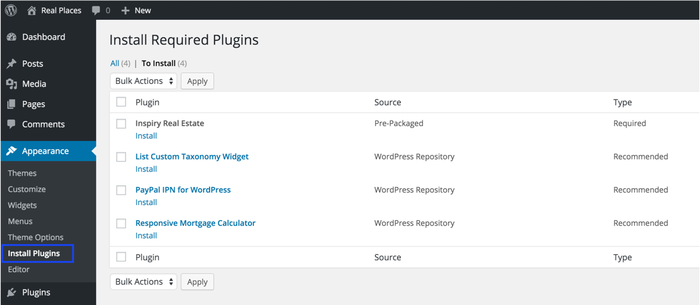 -
Now, Install the plugins as demonstrated in the screen shot below.
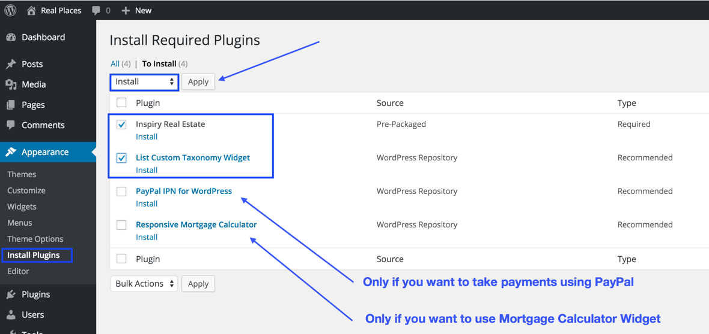 -
After installation, you will view a screen like below, Return to required plugins installer.
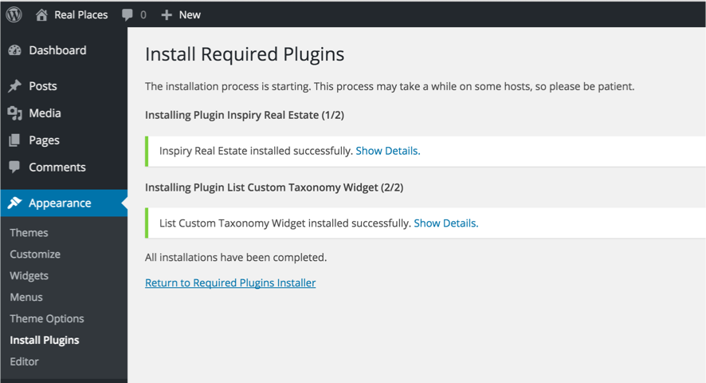 -
Now Activate all the plugins as demonstrated in the screen shot below.
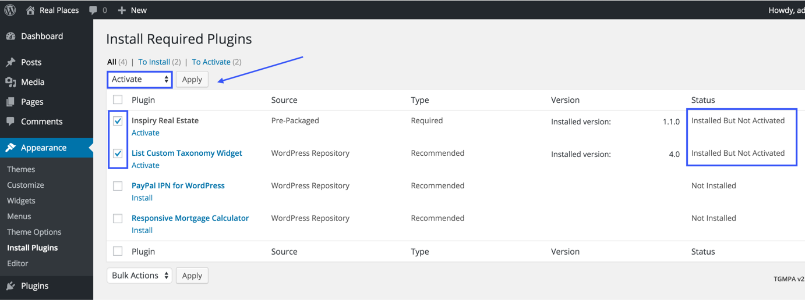 -
After activating required plugins, Go to Inspiry Real Estate plugin settings and save them for 1st time. As guided in screenshot below.
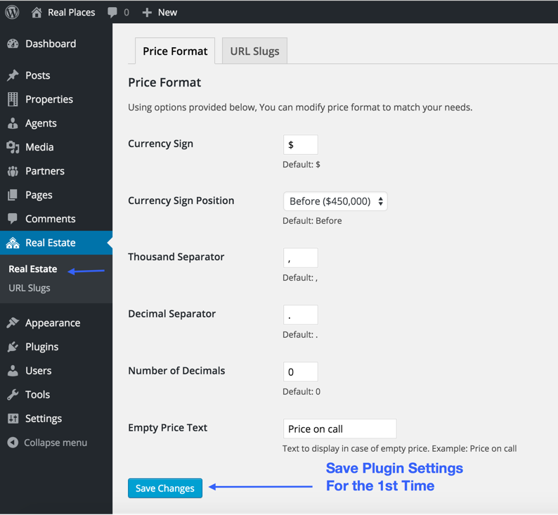 - Once all of the above is Done. The next step is to Import Demo Contents.
Import Demo Contents
You can follow one of these choices.
- One Click Demo Import ( Automatic & Recommended )
- Import XML Contents and Configure the Theme Manually
One Click Demo Import ( Automatic & Recommended )
Step 1
Go to Settings > Permalinks and choose Post name from Common Settings and save the changes, As displayed in the screen shot below.
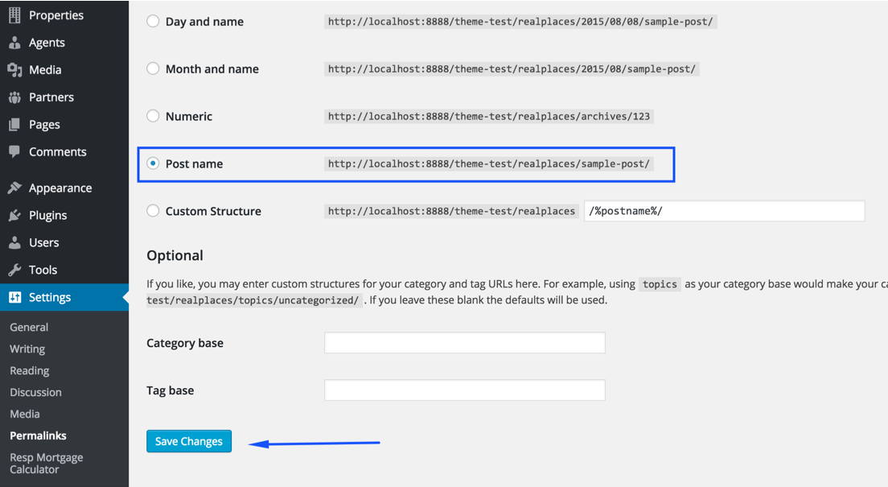Step 2
Note: It is important to complete Step 1 as property search is programmed to work with pretty permalinks. Otherwise you might face some issues after demo import.
Go to WordPress Admin > Appearance > Theme Options and look for Demo Importer in theme options tabs.
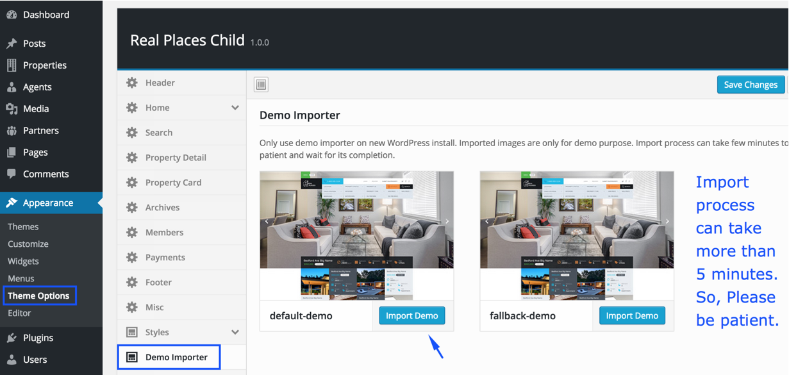Click the Import Demo button of "default-demo" and Wait for few minutes as the demo images are being fetched from remote server and this process can take few minutes.
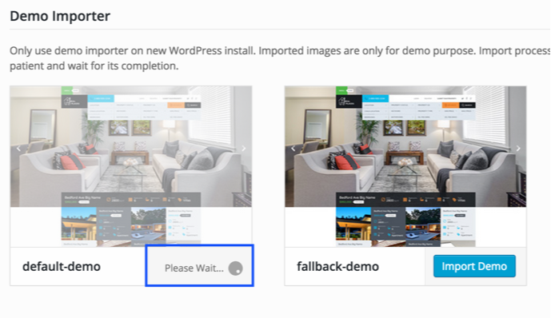Step 3
Once the import process is complete, You will see a screen like the one below. Visit your site and you will find your site working like the theme demo.
Note: In case of failure with "default-demo" import you can consider importing "fallback-demo", As it is the same thing hosted on a different server. In case of any other problem, Get in touch with our support team using our support site.
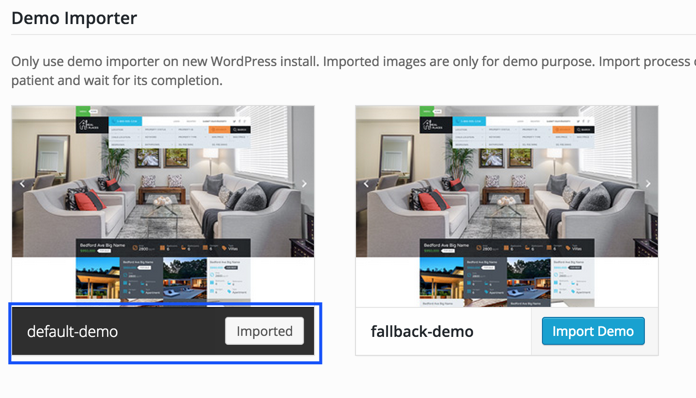Note: The number of imported posts, pages, properties and other stuff is smaller than real demo to make the import process reasonably fast. Otherwise it can be a problem for most users to import demo data.
Import XML Contents and Configure the Theme Manually
Step 1
Go to WordPress Admin > Tools > Import and click WordPress as displayed in image below.
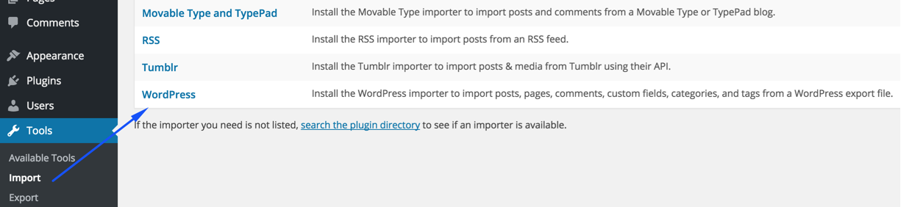At 1st time you need to install WordPress importer plugin
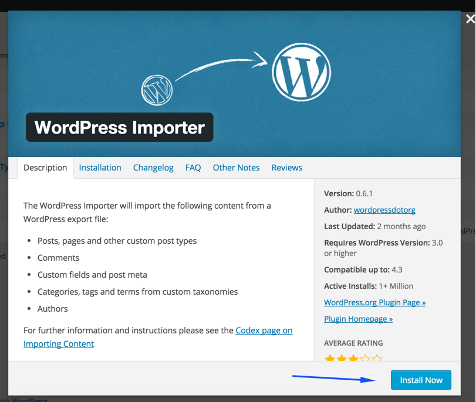Once installed you need to activate the plugin and run the importer.
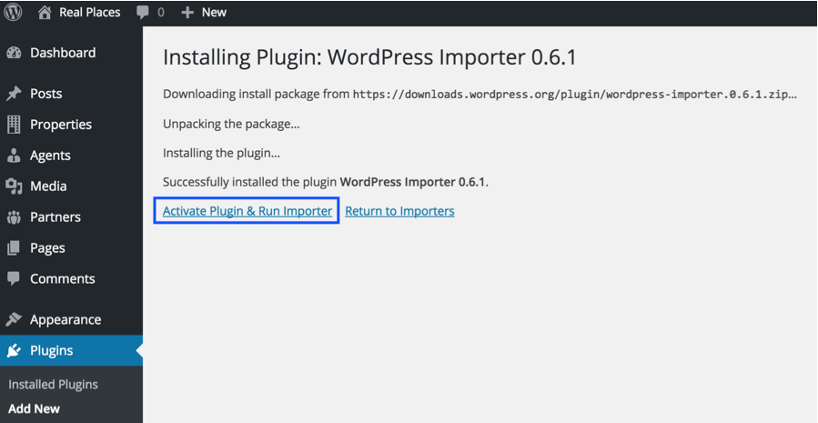Step 2
Look for Import XML folder in unzipped package downloaded from themeforest. There will be two sub-folders in Import XML folder, "default-demo" and "fallback-demo" both contains same stuff but hosted on different servers. You can use the content.xml from any of these folders to import demo contents.
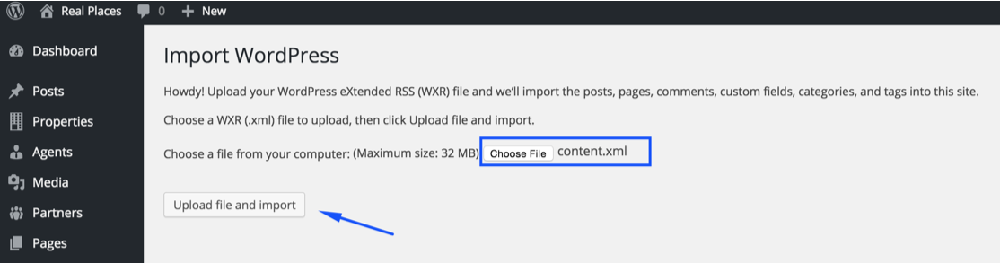After importing file, Assign posts to an existing author. Mark the checkbox to download and import file attachments and Click 'Submit' button.
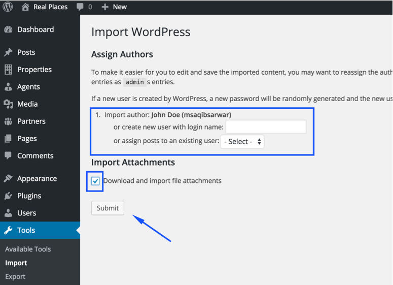Import process can take few minutes. So wait for it and try to keep the focus on current tab in your browser.
After that is done, you will have bunch of posts, pages, properties and other contents imported into your WordPress installation.
Step 3
Navigate to Appearance > Menus and use the Already Imported Menu from XML and assign it to theme location "Primary Menu" from Menu Settings section below menu. After that save the menu. As pointed in the screen shot below.
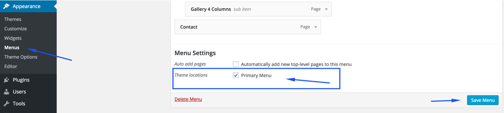Step 4
To configure reading settings you need to visit WordPress Admin > Settings > Reading and choose that front page displays as static page. Then select Home as Front Page and News as Posts Page. As, displayed in the screen shot below.
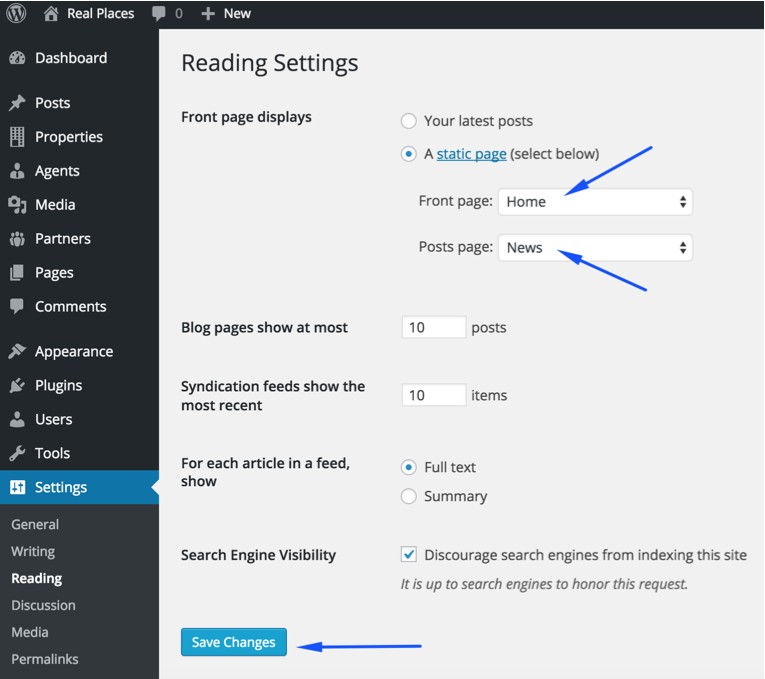Next Step is to Configure Permalink Settings
Step 5
To configure permalinks settings visit WordPress Admin > Settings > Permalinks and change it as displayed in the screen shot below.
Now, All the remaining settings are mostly in theme options and plugin options. You can import theme options using theme-options.txt and widgets using widgets.wie with Following Plugin.
Inspiry Real Estate Plugin Settings
Inspiry Real Estate plugin comes included as part of this theme and it provides required post types and basic functionality for a real estate website.
-
You can change price format using following settings.
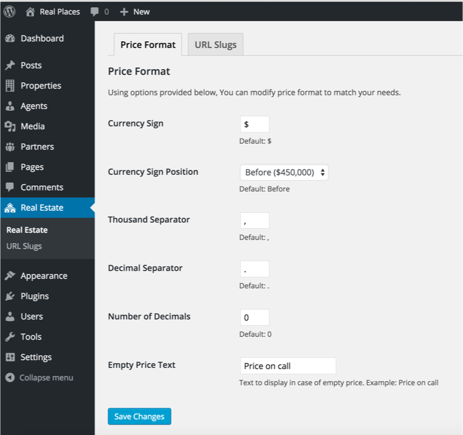
-
You can change URL slugs using settings displayed below.

Create Home & News Pages
In case of Demo Contents Import the home page and news page are already created and you do not need to follow this section.
Create Home Page
To create Home page you need to create a new page, Go to Pages > Add New. You can give this page a title "Home" yet you do not need to include any contents for now. Select the “Home” template from the Page Attributes section, as displayed in the screen shot below and click “Publish”.
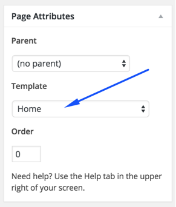Create News Page
To create News page you need to create a new page, Go to Pages > Add New. You can give this page a title "News" yet you do not need to include any contents. Select the “Default Template” template from the Page Attributes section and click “Publish”.
Configure Reading Settings
Now you need to configure reading settings, Go to WordPress Admin > Settings > Reading and choose the front page displays as static page. Then select Home as Front Page and News as Posts Page. As, displayed in the screen shot below.
Configure Pretty Permalinks
To configure pretty permalinks, Go to WordPress Admin > Settings > Permalinks and change it as displayed in the screen shot below.
Configure Primary Menu
Navigate to Appearance > Menus and create a new menu with any name you like. Assign the newly created menu to theme location "Primary Menu" from Menu Settings section below menu. After that save the menu. As pointed in the screen shot below.
Header - Theme Options
Navigate to Appearance > Theme Options > Header and you will find various options to customize header to your needs.
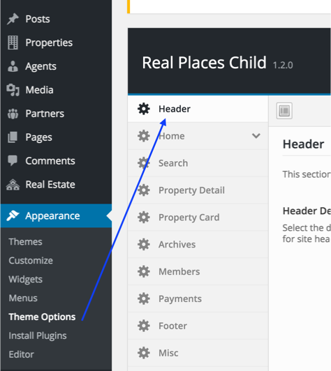There are many options but few important ones are listed below.
-
You can change the header design variation.
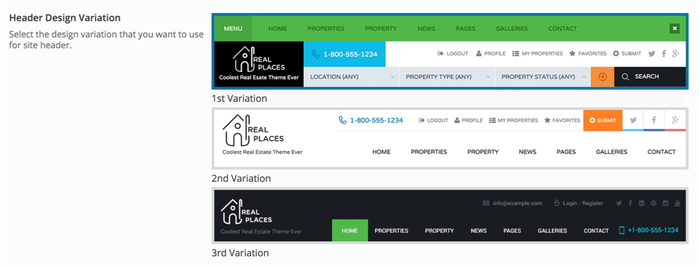 -
You can make the header sticky.
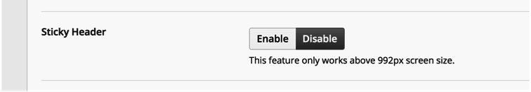 -
You can change the header banner image. Banner image uploaded from this theme option is a global banner image that will be displayed on all the pages of your website except the ones that have specific banner image uploaded from meta box on their edit page.
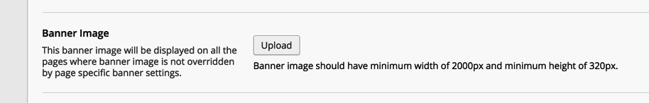 -
You can show or hide wpml language switcher if you are using WPML plugin.
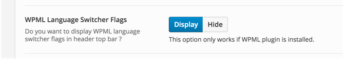 -
You can enable or disable page loader and even change the default loader to your own gif.
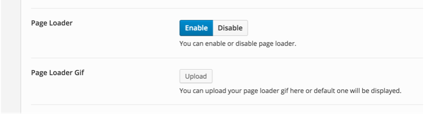
Home - Image Banner or Google Map or Slider
You can display on of following three things below header on homepage.
- Image Banner
- Google Map
- Slider ( It can be one of following three types )
- Properties Slider
- Properties Slider Two
- Properties Slider Three
- Revolution Slider
Go to Appearance > Theme Options > Home to change what to display below header on homepage.
Image Banner
Go to Appearance > Theme Options > Home and choose "Image Banner" as displayed in the screen shot below.
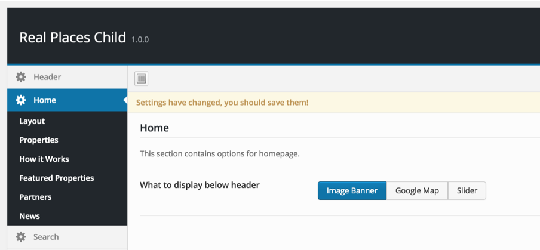After saving these changes You can provide banner image specifically for home page, By editing home page and uploading banner image in it's banner image meta box as displayed in the screen shot below. Otherwise default banner image from header theme options will be displayed.

Google Map
Go to Appearance > Theme Options > Home and choose "Google Map" as displayed in the screen shot below.
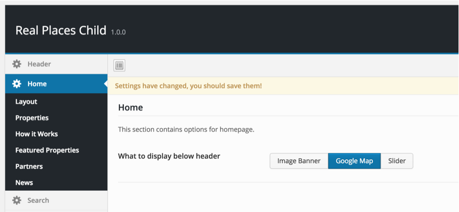Google map will automatically adjust itself based on your provided properties locations.
Slider
Go to Appearance > Theme Options > Home and choose "Slider" as displayed in the screen shot below.
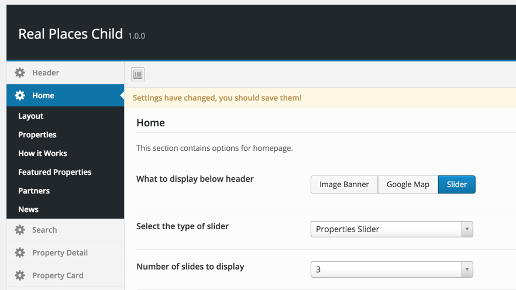As mentioned earlier, Slider can be of following three types
- Properties Slider
- Properties Slider Two
- Properties Slider Three
- Revolution Slider
Properties Slider ( All )
As it's name suggests, Properties slider simply displays property information in slider. You can configure a property to appear in slider from it's edit page, using related meta box. As displayed in the screen shot below.
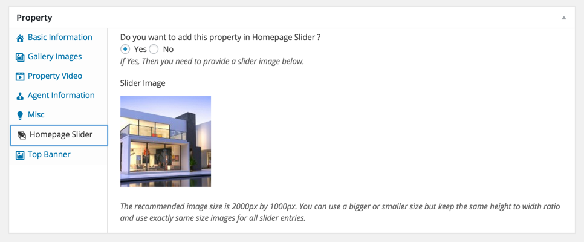Revolution Slider
To use revolution slider you need to install "Slider Revolution" plugin. As displayed in the screen shots below.
-
Go to Plugins > Add New and click on "Upload Plugin".
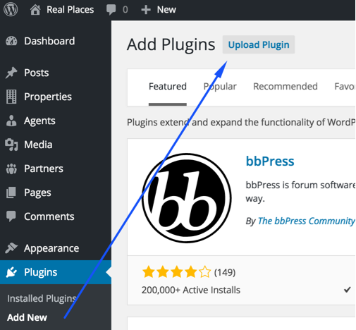 -
Look for the folder name Plugins/Revolution Slider in unzipped package downloaded from themeforest.net. This folder will contain revolution slider's plugin zip, documentation and demo slider import zip. You need to upload the revslider.zip as displayed in image below.
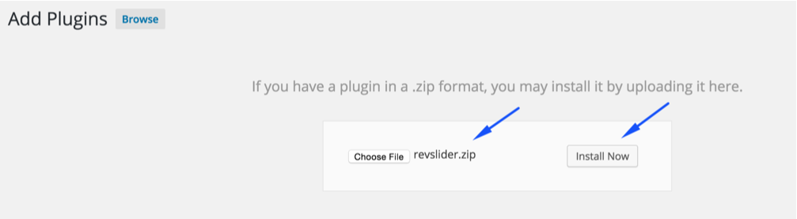 -
Activate the plugin after upload and install.

-
Go to Revolution Slider in the left sidebar and start importing sample slider.
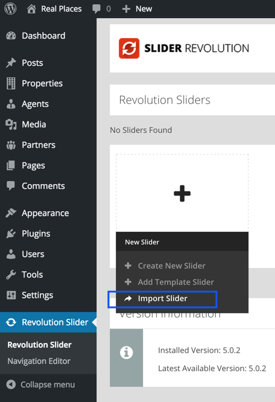 -
You need to choose the real-places.zip file from Plugins/Revolution Slider/real-places-slider folder.
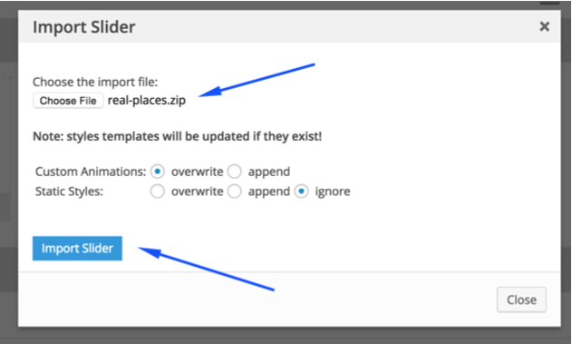 -
Once imported, You need to go to imported slider's edit page.
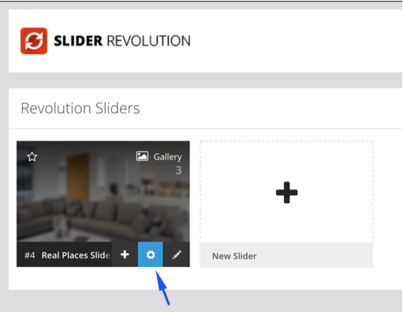 -
Copy it's alias, As pointed in the screen shot below.
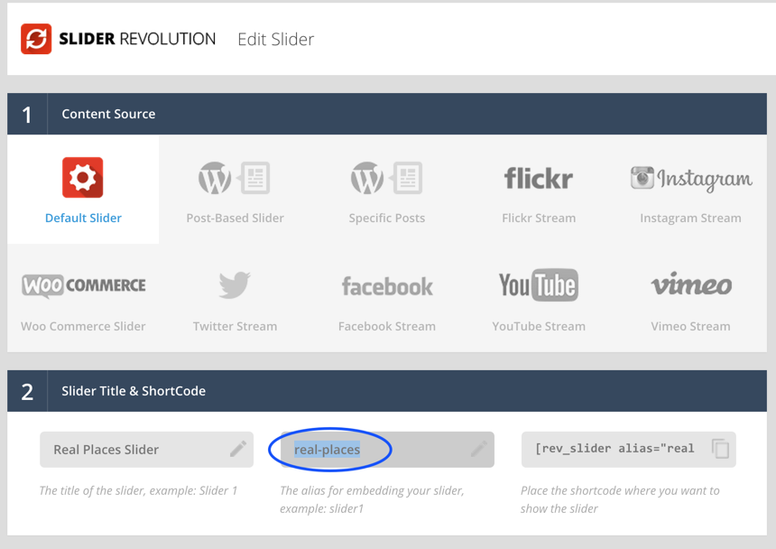 -
Paste the alias in theme options as displayed in the screen shot below.
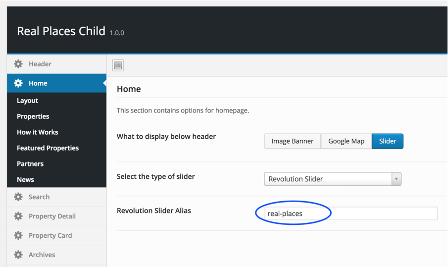After this save the changes and view your homepage.
Home Page Layout
Home page supports various sections and you can enable/disable any of those sections based on your needs. To customize home page sections, Go to Appearance > Theme Options > Home > Layout and make the required modifications. Related screen shot is displayed below.
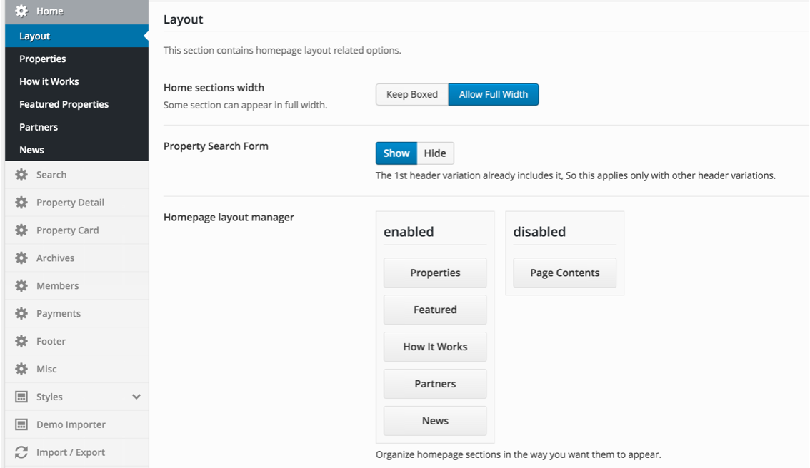Properties on Home Page
Home page provides two design variations for properties section. To customize home page properties, Go to Appearance > Theme Options > Home > Properties and make the required configuration to fulfill your needs. Related screen shot is displayed below.
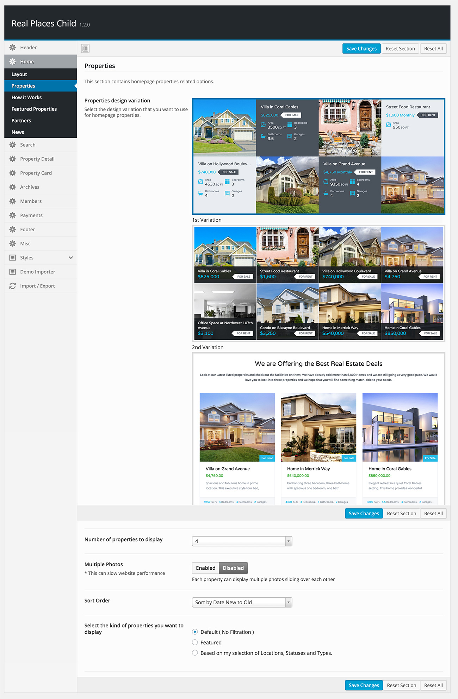How It Works Section on Home Page
Home page provides a "How It Works" section, That you can use to explain some steps to visitor about using your website. To customize this section, Go to Appearance > Theme Options > Home > How It Works and make the required configuration to fulfill your needs. All the options in this section are pretty self explanatory.
-
Introduction Strings
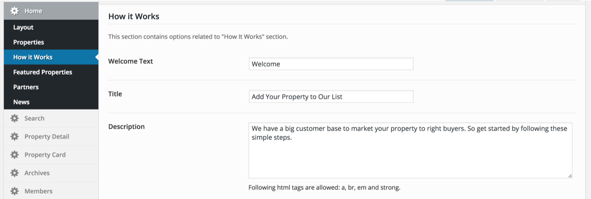 -
Background Image
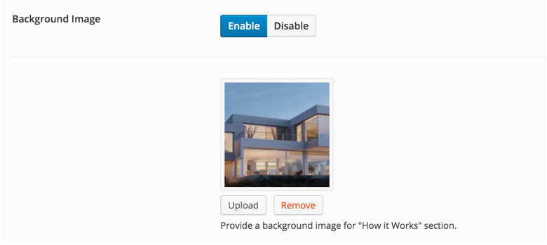 -
Possible Columns
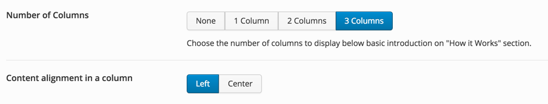 -
Column Data
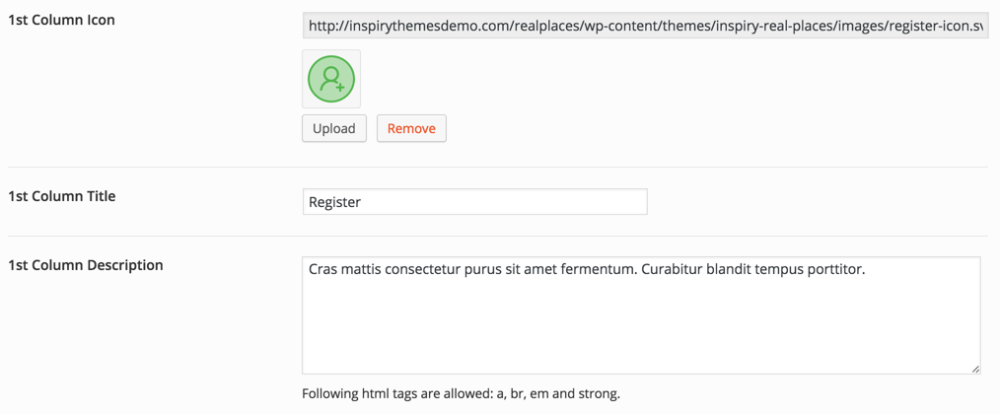 -
Submit Button
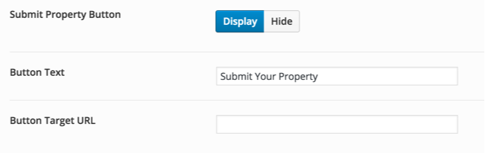
Featured Properties on Home Page
Home page provides two design variations for featured properties section. To customize home page featured properties, Go to Appearance > Theme Options > Home > Featured Properties and make the required configuration to fulfill your needs. Related screen shot is displayed below.
All the options in this section are pretty self explanatory.
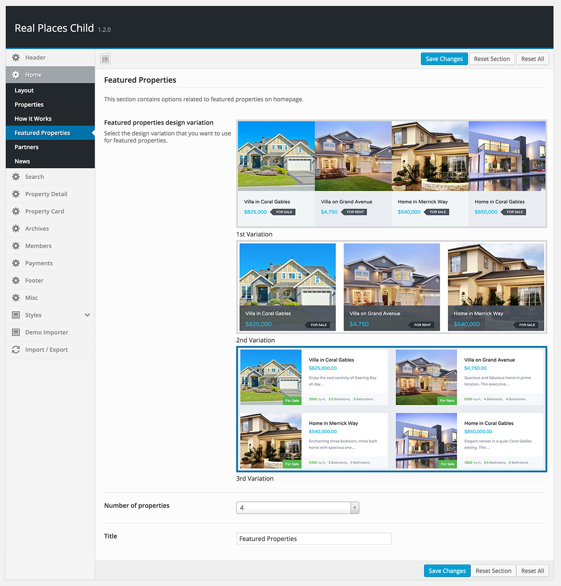Partners on Home Page
Home page provides a "Partners" section, That you can use to display your partner companies. To customize this section, Go to Appearance > Theme Options > Home > Partners and make the required configuration to fulfill your needs. All the options in this section are pretty self explanatory.
News ( Blog Posts ) on Home Page
Home page provides a "News" section, That you can use to display your news/blog posts on homepage. To customize this section, Go to Appearance > Theme Options > Home > News and make the required configuration to fulfill your needs. All the options in this section are self explanatory.
Create Properties Search Results Page
In case of Demo Contents Import the search results page is already created and you do not need to follow the 1st part of this section. You can follow the 2nd part in case of manual demo content import.
Part 1
To create properties search results page you need to create a new page. Go to Pages > Add New and give this page a title "Properties Search", you do not need to include any contents. Select the “Properties Search” template from the Page Attributes section, as displayed in the screen shot below and click “Publish”.
Note: Make sure the name of search page does not conflict with WordPress reserved terms.

Part 2
After publishing properties search results page you need to go to Appearance > Theme Options > Search ( As displayed in the screen shot below ).

Select this newly created page in related theme option. As displayed in the screen shot below.
Now, Properties search form will submit it's data to this newly created properties search results page.
Configure Properties Search Form
These configuration will affect properties search form in following places on your website.
- Both variations of properties search form on home page.
- Properties search form widget for sidebar.
To configure properties search form, Go to Appearance > Theme Options > Search, As displayed in the screen shot below.
Drag & Drop Fields Manager
You can control the search fields you want to display and their order of appearance, Using the drag & drop fields manager displayed in the screen shot below.
Property Features Checkboxes
On all other occurrences of search forms you can show or hide property features checkboxes to filter search results.
Note: This is not for search form in home page header.
Location Field's Customizable Option
Location field is flexible to display 1 to 4 location select boxes.
If you want to display all locations in one select box, Select 1 and provide related title.
Select 2 if you want to display locations like City > Area OR State > City. Make sure to provide related titles.

Select 3 if you want to display locations like Country > State > City OR State > City > Area
Select 4 if you want to display locations like Country > State > City > Area
Min & Max Price Fields Values
You can change the minimum and maximum price fields values to your needs.
Only provide comma separated numbers. Do not add decimal points, dashes, spaces or currency signs.
Search Results Page and It's Header
You can choose the search results page to which the form will send it's data to get search results. You need to visit he previous section to learn how to create a search results page.
Now, You can choose what type of header a search results page can have. As displayed in the screen shot below.
Search Results Page Configuration
You can choose the number of properties to display on search results page and the type of layout you want search results page to have. You can also choose the default order of search results. It is recommended to keep it sorted by date new to old.
Adding News Post
Go to WordPress Admin > Posts > Add New
-
Provide the post title
-
Select the related post format
Post Formats and Related Meta Boxes:
This theme supports various post formats. So, when you select a post format look out for related meta boxes that will appear after your selection. You need to fill out those meta boxes with related information, so that your post can appear in best possible design. -
Write post contents
-
Add or select related category and tags
-
Provide featured image. Featured image should have minimum width of 850px and minimum height of 570px.
Images bigger than minimum required size will be cropped automatically.
- Publish the post once you are done.
Add Agent
Go to WordPress Admin > Agents > Add New
-
Provide the agent name
-
Provide the agent description
-
Provide featured image. Featured image should have minimum width of 220px and minimum height of 220px.
Images bigger in size will be cropped automatically.
-
Provide the agent related details
- Publish the agent once you are done.
Add Property
Go to WordPress Admin > Properties > Add New
- Provide property title
- Provide property description
- Provide property basic information like price, area, beds, baths and garages etc.
- Provide property location information on google map.
Leave the address field empty to hide the map on property detail page.
- Provide property gallery images if any
- Provide property virtual video if available
- Provide property agent information.
Difference Between Author Information and Agent's Information
From website visitor point of view there is no difference and information from both will be displayed in similar way.
From website admin point of view, An author is basically a site user that logins and add a property using admin side, If his role is author or above OR add a property from front end property submission page.
An agent is a custom post type and any user with role equal or above author role can add those agents and later on assign properties to those agents.
So, basically it is a flexible feature that can be used in a way that fulfills your needs.- None will hide the agent's information box.
- Author information will display the Author( user who added the property ) information.
You can configure your user information from edit profile page ( Please check related documentation section for details of setting up front end edit user profile page).
If you have adequate rights, You can also modify the author from Author meta box on property edit page.
- Display agent's information will display the selected agent's information.
- If you want to add this property into featured properties then mark this property as featured.
You can provide any file attachments you want to share with visitor.
You can keep some private notes about this property as private notes will not be displayed anywhere else.

- If you want to add this property in homepage slider then you need to choose Yes for field displayed in the screen shot below and provide slider image as required by Slider Image field below it.
- If you are interested in using a custom banner image for this property then you can upload that using banner image upload field displayed in the screen shot below.
- You can provide additional details about a property using related meta box displayed in the screen shot below.
- If you feel like regular description is not good enough to be displayed as excerpt then you can add your own hand crafted excerpt using related meta box displayed in the screen shot below.
- You need to upload a featured image for every property and make sure it's size is equal or greater than 850px by 600px
- Choose a property type if already exists or add new one that properly represents your property.
- Select a property status if already exists or add new one that properly represents your property.
- Select a property location if already exists or add new on that properly represents your property.
If you are using hierarchical locations then make sure to choose the one at the lowest level ( lowest level child ) and parents will be considered automatically.
- Choose the applicable property features if already exists or add new one that are important for your property.
- If you are selling a property that is a child/sub property of another property that is also in market for sale or rent then you can connect two properties in a parent child relationship using met box displayed in the screen shot below.
- If you are taking payments for your properties then related payment information for paid properties will be displayed in a meta box that is displayed in the following screen shot.
- So, Provide that information related to your property using all the options described above and Publish it once you are done.
How to add Properties Pages
- Go to WordPress Dashboard > Pages > Add New and provide a page title that suit your purpose.
- Select the appropriate template from page attributes. As examples are displayed in 4 screen shots below.
- You can filter and sort the properties the way you want from Properties Settings meta boxes displayed in the screen shot below.
- If you want to change the default banner then you can do that from Banner Settings meta box displayed in the screen shot below.
- You can Publish the page once it is ready.
- After publishing you need to add the newly created page in menu from WordPress Admin > Appearance > Menus
How to add Agents Pages
In case of Demo Contents Import agents pages are already created and you do not need to follow this section.
- Go to WordPress Dashboard > Pages > Add New and provide a page title that suit your purpose.
- Select the appropriate template from page attributes. As examples are displayed in 3 screen shots below.
- If you want to change the default banner then you can do that from Banner Settings meta box displayed in the screen shot below.
- You can Publish the page once it is ready.
- After publishing you need to add the newly created page in menu from WordPress Admin > Appearance > Menus
How to add Gallery Pages
In case of Demo Contents Import gallery pages are already created and you do not need to follow this section.
- Go to WordPress Dashboard > Pages > Add New and provide a page title that suit your purpose.
- Select the appropriate template from page attributes. As examples are displayed in 3 screen shots below.
- If you want to change the default banner then you can do that from Banner Settings meta box displayed in screen shot below.
- You can Publish the page once it is ready.
- After publishing you need to add the newly created page in menu from WordPress Admin > Appearance > Menus
How to add Contact Pages
In case of Demo Contents Import contact us pages is already created and you do not need to follow the 1st part of this section as 2nd part of the section will tell you about adding a contact page using contact form 7 plugin that is not part of the imported contents.
How to add Default Contact Page
- Go to WordPress Dashboard > Pages > Add New and provide a page title that suit your purpose.
- Select the Contact template from page attributes. As displayed in the screen shots below.
- Provide address for google map, drag the marker to right position and select your preferred zoom level. You can leave the address field empty if you want to hide google map.
- Provide your office contact details and timings as displayed in the screen shot below.
- Provide contact form heading and email to receive messages from contact form.
- If you want to change the default banner then you can do that from Banner Settings meta box displayed in the screen shot below.
- You can Publish the page once it is ready.
- After publishing you need to add the newly created page in menu from WordPress Admin > Appearance > Menus
How to add Contact form 7 Based Contact Page
- Install and activate Contact Form 7 plugin.
- Create a new form in "Contact Form 7" plugin to suit your needs OR use the default one. Copy the shortcode of target form in "Contact Form 7".
- Paste the copied short code in Contact Page Information meta box that is displayed in the screen shot below.
- Update the page and visit the front end and you will see that default form is replaced with contact form 7.
How to Allow User Registration
You can allow user registration from Settings > General as displayed in the screen shot below. Mark the membership checkbox and select the appropriate role based on your requirements. You can read more about WordPress Roles and Capabilities to make a better decision. Also, Keep in mind that there are various plugins that you can use to edit WordPress user roles. Make sure to save the changes.
Now, Your website users will be able to sign up as pointed in the screen shot below.
Set Up Social Login
- Install and Activate WordPress Social Login plugin.
-
After activation, Go to plugin settings and configure those for your desired social networks as displayed in screenshot below.
-
Also make sure to configure widget settings as recommended below.
-
Once configurations are done, You can check your login form and social login options will appear below it.
Feel free to get in touch with us using our support website in case of any confusion.
How to Add Favorites Page
In case of Demo Contents Import favorites page is already created and you do not need to create it but make sure to follow point 5 and 6 in this section.
- To add favorites page, Go to WordPress Admin > Pages > Add New
- Provide "Favorites" as page title ( You can provide any page title you want )
- Select Favorites template from page attributes as displayed in the screen shot below.
- Publish the page once you are done.
-
Now you need to go to Appearance > Theme Options > Members and choose the newly created page as favorites page. You can also choose the number of properties to display on favorites page.
-
Save the changes in theme options and your Favorites page is ready for use.
How to Add "Edit Profile" Page
In case of Demo Contents Import edit profile page is already created and you do not need to create it but make sure to follow point 5 and 6 in this section.
- To add edit profile page, Go to WordPress Admin > Pages > Add New
- Provide "Edit Profile" as page title ( You can provide any page title you want )
- Select Edit Profile template from page attributes as displayed in the screen shot below.
- Publish the page once you are done.
-
Now you need to go to Appearance > Theme Options > Members and choose the newly created page as edit profile page. As displayed in the screen shot below.
-
Save the changes in theme options and Edit Profile page is ready for use.
How to Add "Submit Property" Page
In case of Demo Contents Import submit property page is already created and you do not need to create it but make sure to follow point 5 and 6 in this section.
- To add submit property page, Go to WordPress Admin > Pages > Add New
- Provide "Submit Property" as page title ( You can provide any page title you want )
- Select Submit Property template from page attributes as displayed in the screen shot below.
- Publish the page once you are done.
-
Now you need to go to Appearance > Theme Options > Members and choose the newly created page as submit property page. As displayed in blue box of the screen shot below. You can configure other settings related to this page using theme options marked by yellow box in the screen shot.
-
Save the changes in theme options and Submit Property page is ready for use.
How to Add "My Properties" Page
In case of Demo Contents Import my properties page is already created and you do not need to create it but make sure to follow point 5 and 6 in this section.
- To add my properties page, Go to WordPress Admin > Pages > Add New
- Provide "My Properties" as page title ( You can provide any page title you want )
- Select My Properties template from page attributes as displayed in the screen shot below.
- Publish the page once you are done.
-
Now you need to go to Appearance > Theme Options > Members and choose the newly created page as my properties page. As displayed in the screen shot below.
-
Save the changes in theme options and My Properties page is ready for use.
How to setup FAQs Page
-
I have developed Quick and Easy FAQs plugin for this purpose. Install the Quick and Easy FAQs plugin. As guided in the screen shot below.
-
After installing and activating the plugin. You can add FAQs from FAQs > Add new as displayed in the screen shot below.
-
Later on you have to add a new page with default template and add one of the following shortcodes to display FAQs in a way you want.
- Display all FAQs in simple list style. Shortcode
[faqs] - Display all FAQs in simple list style but separated by groups. Shortcode
[faqs grouped="yes"] - Display FAQs in simple list style but filtered by given group slug. Shortcodes
[faqs filter="group-slug"]or[faqs filter="group-slug,another-group-slug"] - Display all FAQs in toggle style using following shortcode. Shortcode
[faqs style="toggle"] - Display all FAQs in toggle style but separated by groups. Shortcode
[faqs style="toggle" grouped="yes"] - Display FAQs in toggle style but filtered by given group slug. Shortcode
[faqs style="toggle" filter="group-slug"]or[faqs style="toggle" filter="group-slug,another-group-slug"] - Display all FAQs in filterable toggle style. Shortcode
[faqs style="filterable-toggle"]
- Display all FAQs in simple list style. Shortcode
- Screen shot of a sample FAQs page is given below.
How to setup Testimonials Page
-
I have developed Quick and Easy Testimonials plugin for this purpose. Install the Quick and Easy Testimonials plugin. As guided in the screen shot below.
-
After installing and activating the plugin. You can add testimonials from Testimonials > Add New as displayed in the screen shot below.
-
Later on you can use following shortcodes to display testimonials on a page.
- Display all testimonials. Shortcode
[testimonials] - Display specific number of testimonials. Shortcode
[testimonials count="3"] - Display only testimonials related to a category. Shortcode
[testimonials filter="category-slug"] - Display single testimonial. Shortcode
[testimonials id="123"]
- Display all testimonials. Shortcode
- Screen shot of a sample testimonials page is given below.
Properties Search Widget
- Go to Appearance > Widgets and look for Inspiry Property Search widget.
- Use this widget in a sidebar and provide it's title.
- Now check out the front end of your site and you will have the Properties Search Widget working for your site. It's appearance and functionality depends upon the settings your provided in
search form configurations. You can visit the "Search Setup" section of this documentation to explore those configurations.
Featured Properties Widget
- Go to Appearance > Widgets and look for Inspiry Featured Properties widget.
- Use this widget in a sidebar and configure related details.
- Now check out the front end of your site and you will have the Featured Properties Widget working for your site.
Social Media Icons Widget
- Go to Appearance > Widgets and look for Inspiry Social Media Icons widget.
- Use this widget in a footer widget area and provide links for social icons that you want to display and leave others empty.
- Now check out the front end of your site and you will have the Social Media Icons Widget working for your site.
List Custom Taxonomy Widget
- You need List Custom Taxonomy plugin for this widget. It is a recommended plugin and chances are, That you have already installed it during theme install.
- Go to Appearance > Widgets and look for List Custom Taxonomy widget.
- Use this widget in a sidebar or footer widget area and configure related details.
- Now check out the front end of your site and you will have the List Custom Taxonomy Widget working for your site.
Mortgage Calculator Widget
- You need Mortgage Calculator plugin. It is a recommended plugin and chances are, That you have already installed it during theme install.
- You can configure it's settings from Settgins > Mortgage Calculator

- Go to Appearance > Widgets and look for Mortgage Calculator widget.

- Use this widget in property sidebar and provide it's title.
- Now check out property detail page front end and you will have the Mortgage Calculator Widget working for your site.
Start Using Visual Composer
Look for the folder name Plugins/Visual Composer in unzipped package downloaded from themeforest.net. This folder contains visual composer plugin zip named as js_composer.zip. This folder also contains visual composer documentation and other files.
You need to go to Plugins > Add New in your site's WordPress dashboard and upload the js_composer.zip as displayed in the screen shots below.
Once installed, You need to activate the plugin as displayed in the screen shot below.
After activation you can create a test page to try out visual composer.
Click on "Backend Editor" Button in visual composer toolbar, and you will have the visual composer page builder layout ready for use as displayed in the screen shot below. Now, You can start adding visual composer components by clicking + button.
Going Full Width
If you want, You can assign a full width template to the test page.
Theme Translation
This theme is translation ready.- For translation to only one language you should consult This Knowledge Base Article
- For translation to multiple languages you can use WPML Plugin with this theme.
In case of any problem you can visit our support site and create a support ticket for your problem.
Setup dsIDXpress
This theme provides limited support for dsIDXpress Plugin.
- 1st, You have to register a trial account at www.diversesolutions.com and get an activation key.
- After that you have to install dsIDXpress plugin and activate it using activation key you got from registering with divers solutions website. The related screen shot is displayed below.
- After activation you have to set General settings for dsIDXpress as displayed in the screen shot below.
Now, You can access your dsIDXpress properties list using following URL format www.yourwebsite.com/idx/ -
You can use dsIDXpress widgets in dsIDXpress sidebar.
-
You can add dsIDXpress properties list page in menu as displayed in the screen shot below.
How to get Google Maps API Key for your website
As of June 2016, to keep Google Maps running smoothly on your website you need a special API Key. To get and setup the API Key for Google Maps please follow the instructions below.
- Please go to Google API Console. and login with your google account.
- Create a new project or select an existing project then click on Continue to enable the API and any related services.
- Name your browser key and restrict it by adding your site URLs as shown in the screenshot below.
- Copy the generated Google Maps API key from the popup, you will need this to set in Theme Options (Dashboard > Appearance > Theme Options > Misc > Google Maps API Key). Click on Close button to proceed.
- By default most of the APIs are enabled but you have to enable other APIs in order to make the Find Address field work on Property Edit Page.
WPML Basic Setup
I am assuming that you have a working version of WordPress with Real Places theme installed and configured based on the documenation and sample data provided with in the theme package.
Please follow the steps below to configure the basic settings for WPML Plugin.
- Install and Activate WPML Multilingual CMS Plugin.
- Go to WPML > Languages.
- Select English as Current Language and Go Next.
- Select the other languages for your site and Go Next.
- Leave all the section on this page as it is and Go Next.
- Register WPML if you want to receive automatic updates OR press "Remind Me Later" button.
- Click Finish Button, Now you will be taken to WPML > Languages page but with different interface. If not then manually go to WPML > Languages Page.
- Look for Language URL Format section and choose the url format that suites your needs.
I am choosing the 1st one with languages directories at the end. Save the changes.
- Look for Language Switcher Options section and then look for What to include in the language switcher option.
Choose to display Flag with in language switcher and save the changes. Leave all other options as it is.
- Leave all other sections as it is.
- Now, install and activate WPML String Translation plugin.
- After that, go to WPML > Theme and Plugin Localization.
- 1st Option is “Select how to translate strings in the theme and plugins”, Choose Translate the theme and plugins using WPML's String Translation and Save.
- Next Option is “Select how to get translations for WordPress”, Choose the 1st options “WPML will automatically download translations for WordPress” and save.
- Skip the Option “Language locale Settings”.
- Next Options is “Strings in the Theme”, Press the Scan the theme for Strings Button and Wait for results.
-
Now, Go to WPML > String Translation section and configure the following settings.
- Basic settings are complete and you can translate a string that do not exist in post, pages and taxonomies using WPML > String Translation Section. For more information, please visit: https://wpml.org/documentation/getting-started-guide/string-translation/
Translate Home & News Page
1. Duplicate Home Page for Other Language
- Go to Pages on WordPress admin side and look for Home Page
- Open the Home page for editing and look for Language meta box in right sidebar.
- Select Duplicate in front of your desired other language. and press Duplicate button. The page will refresh.
Note: You can edit the duplicated page if you need to but we are not doing it here. - Now you can go to the Home page on front end ( visit the site ) and choose the translated home page's language from language switcher in header top bar and you will see that page will refresh and URL will be changed to your newly translated homepage.
Note: If you are not able to view language switcher then make sure to enable the setting in Appearance > Theme Options > Header section as displayed in screen shot below.
- Do not worry about lots of un-translated things in header, footer and content area. You will learn to translate those one by one.
2. Duplicate News Page for Other Language
- Go to Pages on WordPress admin side and look for News Page
- Duplicate it the same way we duplicated home page. ( As explained above )
- Edit the duplicated news page and provide it translated title. As displayed below.
- Update the page after editing.
3. Update Reading Settings
- After creating Translated Pages for Home and news Go to Settings > Reading and configure the translated pages as Front Page and Posts Page.
WPML Menus Sync
- To setup language specific menus, Go to WPML > WPML Menus Sunc
- Click the Sync button.
-
Select the pages that you have translated + the Main Menu translation to other language.
Press Apply Changes and wait for the menus to be synced.
- Once syncing is complete, visit the home page in other language and you will see that translated menu will appear in place of English menu.
String Translation
You can translate a string that does not exist in post, pages and taxonomies using WPML > String Translation section.
String Translation Example
- We will learn how to translate tagline, which is "Just another WordPress site" for this example.
- Go to WPML > String Translation section and search for "Just another WordPress site".
- Once found, translate it as displayed below.
- Then search for "Quick Search" and translate it as displayed below.
- Now view the front end of your other language home page and you will have the tagline and "Quick Search" translated.
- So, you can translate all strings that are out of post's or page's content area.
Translate a Property
- Go to Properties in WordPress admin side and start editing a property.
-
Look for language meta box in right sidebar, check the duplicate checkbox and duplicate the property in other language.
The page will refresh and property will be duplicate.
Duplicating a property will save you from lots of hard work. -
Now, open the duplicated property for editing by clicking on pencil icon.
- On translated property's edit page, go through all the fields one by one and provide the translated information.
-
In agent field, you need to choose the translated agent ( You will not have any in start, but you can translate one easily using below given instructions ).
Note : Update the property that is currently being editing before moving ahead with agent's translation.
To Translate an Agent : Simply open an agent for editing and duplicate it into other language. Open the duplicated agent for editing and update the English information into translated information then update the agent.
Refresh the translated property edit page, or re-open the translated property for editing and you will have the translated agent in agent field's select box.
Translating Property Search Page
- Go to Pages in WordPress admin side and look for Property Search Page.
Click on the + button to add it's translation.
-
Provide the translated page title.
-
Make sure the language meta box is showing the right settings.
-
Make sure it is using the Property Search Template.
- Publish the page once ready.
- For English Property Search page we have already configured the URL in appropriate settings section.
Now, we need to select the translated search page.
- Property Search page is translated and ready to be used.
Customize Styles
There are various options available to modify theme styles.- Theme Options - Go to Appearance > Theme Options > Styles for various styles related sections.
- Quick CSS - Go to Appearance > Theme Options > Styles > Quick CSS to add small css changes.
- Custom CSS in Child Theme - 'child-custom.css' file is provided in child theme to add big css changes.
- Custom CSS in Parent Theme - if you are not using child theme then 'css/custom.css' file is provided in parent theme to add big css changes.
Hire Customization Services
For any modification/customization or any custom feature which is important for you then you can consider our Theme Customization Services using our theme customization services.